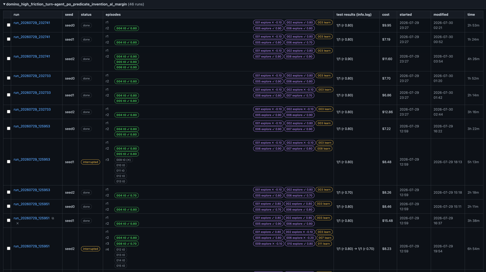
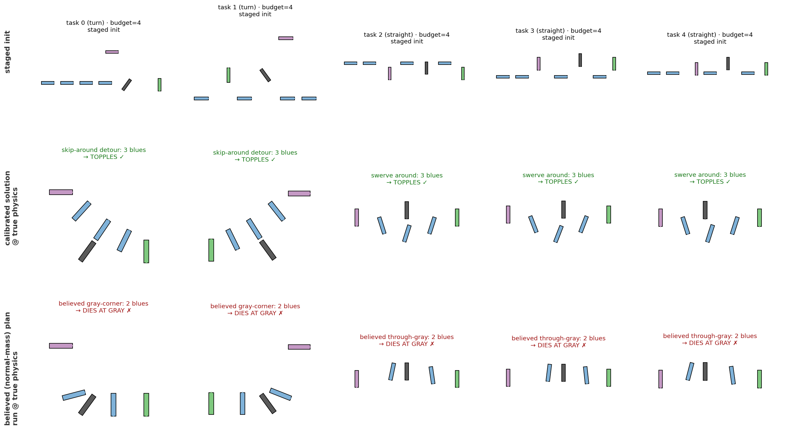

<!doctype html>
<html lang="en">
<head>
<meta charset="utf-8">
<title>Weekly Sync 2026-07-30: Results + Pipeline + This Week's Changes</title>
<meta name="viewport" content="width=device-width, initial-scale=1.0">
<link rel="stylesheet" href="https://cdn.jsdelivr.net/npm/reveal.js@4.6.1/dist/reveal.css">
<link rel="stylesheet" href="https://cdn.jsdelivr.net/npm/reveal.js@4.6.1/dist/theme/white.css">
<link rel="stylesheet" href="https://cdn.jsdelivr.net/npm/reveal.js@4.6.1/plugin/highlight/monokai.css">
<style>
  .reveal { font-size: 28px; }
  .reveal h1 { font-size: 1.5em; }
  .reveal h2 { font-size: 1.1em; margin-bottom: 0.55em; }
  .reveal ul { font-size: 0.8em; line-height: 1.42; display: block; }
  .reveal ol { font-size: 0.8em; line-height: 1.42; display: block; }
  .reveal li { margin: 0.26em 0; }
  .reveal table { font-size: 0.62em; margin: 0 auto; }
  .reveal table th, .reveal table td { padding: 0.28em 0.6em; }
  .reveal .small { font-size: 0.58em; color: #555; }
  .reveal .good { color: #1a7a1a; }
  .reveal .bad { color: #a01515; }
  .reveal .hl { color: #b3541e; font-weight: 600; }
  .reveal .new { display: inline-block; background: #b3541e; color: #fff; font-size: 0.62em; font-weight: 700; padding: 0.05em 0.45em; border-radius: 0.4em; vertical-align: middle; }
  .reveal img { max-height: 520px; }
  .reveal pre { font-size: 0.52em; width: 96%; line-height: 1.3; box-shadow: none; border: 1px solid #ddd; }
  .reveal pre code { max-height: 520px; padding: 0.6em; }
  .reveal code { color: #2a5d8a; }
  .reveal p { font-size: 0.8em; }
</style>
</head>
<body>
<div class="reveal"><div class="slides">

<!-- ======================================================================
  Slides are Markdown inside the script block below, separated by a blank
  line, a line of three dashes, a blank line. "Note:" lines are speaker
  notes (press S). Figures live in assets/ (this deck's own, incl. the
  before/after mosaic GIFs built from the runs' saved episode videos) and
  are also referenced from ../sysid/ and ../envs/domino_min_block/.
  Structure: results first, then the learning/planning pipeline with this
  week's changes called out as NEW highlights per stage.
======================================================================= -->

<section data-markdown data-separator="^\r?\n---\r?\n$" data-separator-notes="^Note:">
<script type="text/template">
# Our agent on Domino: 10/10 on the Mismatch Benchmark

Results, the learning/planning pipeline, and this week's changes

Weekly project sync, 2026-07-30<br>
<!-- .element: class="small" -->

Note: Structure: first the headline results from last night's runs, with before/after videos. Then a walkthrough of the pipeline that produces them, with this week's changes highlighted at the stage where each one lives.

---

## Result: 10/10 solved



`domino_high_friction_turn-agent_po_predicate_invention_al_margin`, batches of 2026-07-29: all 10 completed runs 1/1 (rewards 0.70-0.90); the 2 "interrupted" rows also tested 1/1 first (killed later by an API outage). Cost $6.86-$15.48, 1.4-6.9 h per run.
<!-- .element: class="small" -->

Note: Every run genuinely identified friction on the way: the fits land around 0.48 against a true 0.5, starting from a believed 0.1. The two interrupted rows had already passed their test evaluation and were burning optional extra cycles when the API went down, so the honest count is 12/12 test results, 10/10 on completed runs. This is the first clean sweep of this benchmark across seeds and launches.

---

## The tasks: friction mismatch


Belief physics says friction 0.1; the world runs 0.5. Tasks are k*-minimal: the believed-physics build (bottom row) uses the wrong number of blues, so an agent that never corrects its belief loses reward or fails outright.
<!-- .element: class="small" -->

Note: Middle row is the calibrated solution at true physics; bottom row is what a mu-0.1 model builds - on turn tasks it wastes a blue (3 > k*=2), on straight tasks it over-chains. The reward is 1.0 for a certified success minus 0.1 per blue consumed, so sysID quality shows up directly in the score, not just in pass/fail.

---

## Before learning: cycle-0 exploration on the train task

<video src="assets/al_margin_before_learning_3x3.mp4" autoplay loop muted playsinline style="max-height: 560px; width: auto; display: block; margin: 0 auto 0.3em;"></video>

Rows = seeds 0/1/2, columns = the three launches. All nine first episodes fail (reward -0.10): plans built at believed friction 0.1 do not cascade at true 0.5.
<!-- .element: class="small" -->

Note: These are the agents' very first interaction episodes, before any learning, from the runs' own saved videos: the layouts they build are the ones their wrong prior physics says should work - tight corners and long hops that a mu-0.5 world refuses to propagate. This is the mismatch the benchmark is built around.

---

## After learning: test-task solves

<video src="assets/al_margin_after_learning_3x3.mp4" autoplay loop muted playsinline style="max-height: 560px; width: auto; display: block; margin: 0 auto 0.3em;"></video>

Same grid: the held-out test task, solved after 1-2 learning cycles. All nine are certified cascades (fingertip-only replay), rewards 0.70-0.90 depending on blues consumed.
<!-- .element: class="small" -->

Note: The visible difference from the before-grid: relay dominoes are placed much closer together and at shallower angles - that IS the learned friction, expressed as geometry. Certification means the whole cascade re-runs with the arm intangible except the fingertips, so none of these successes are arm-assisted.

---

## The pipeline: an LLM coding agent in an online TAMP loop

- Each cycle: <span class="hl">explore</span> on train tasks &rarr; <span class="hl">synthesize</span> a world model (write `simulator.py` + invented predicates + process rules and decide what to fit.)  &rarr; <span class="hl">solve </span> held-out tasks.
- The agent is a Claude coding agent (Claude Agent SDK, `claude-sonnet-5`) with a sandboxed `sim` tool API: `sim.run` (rollouts + reliability + contacts), `sim.refine` (backtracking parameter search), `sim.fit` (Bayesian MAP sysID), `sim.residuals`, `sim.render`.
- Two session kinds: **solve** sessions plan against the current belief; **synthesis** sessions write `simulator.py` + invented predicates + process rules and decide what to fit.

Note: The mental model: the belief env is PyBullet plus the agent's own code artifacts; the real env is PyBullet at the true parameters plus the certified evaluator. This week's changes are all about making the gates between those two honest. The next slides walk the stages in order, with the changes tagged NEW at the stage where each lives.

---

## Stage 1: explore + data

- 2 explore episodes per cycle on the train task (`agent_bilevel`), recorded as pose trajectories: joint-position setpoints updated at 12 Hz, one pose snapshot per setpoint (positions and orientations only, no velocities) - the only data every downstream fit sees.

Note: The video change is why this deck exists in its current form - the mosaics are the runs' own recordings, zero re-simulation. The early-stop gate closed a real failure mode where a lucky first episode ended the run before any learning happened.

---

## Stage 2: synthesis - the agent writes its world model <span class="new">NEW x2</span>

- The synthesis session produces `simulator.py` (process rules + `PHYSICAL_PARAMS` declaration), `predicates.py` (invented predicates), and declares the fit's free parameters (which physics constants and rule constants `sim.fit` estimates, and which features the objective scores).
- <span class="new">NEW</span> The prompt makes base-sim identification an <span class="hl">explicit decision</span>: skipping `PHYSICAL_PARAMS` must be a stated choice, not a silent omission. Trigger: two seeds independently skipped sysID, the belief gate then tested stale mu 0.1 physics and rejected genuinely-working plans, and one agent induced a false "zero toppled blues" rule from those opaque rejections.
- <span class="new">NEW</span> `sim.residuals` reports <span class="hl">open-loop replay disagreement</span>, giving the agent a direct measure of how wrong its simulator still is - instead of inferring it from downstream plan failures.

Note: This is the sysID-skip trap fixed on the input side; the combined-substrate probe two slides later is the same trap fixed on the gate side. Both landed this week and both are active in the 10/10 runs.

---

## Stage 3: the sysID fit

- The fit: free-run replays of the recorded trajectories per candidate theta, scored against the recording; joint Bayesian MAP over physical + rule params in log space, with a Laplace posterior and per-parameter identifiability verdicts.
- Only parameters verdicted <span class="hl">identified</span> are applied to the belief env (NOT-identified fits revert to their built-in values as arbitrary noise), and the posterior width + verdict set the interval the capture gate's physics-margin sweep must cover.
<!-- - <span class="new">NEW</span> <span class="hl">Huber-capped + summary-statistic objective</span>: replays have deterministic chaos spikes (measured: SSE 0.0025 at theta 0.4743, 248.7 at 0.4746); the Huber cap counts a diverged replay linearly so one spike cannot outvote every clean observation, and summary terms (final displacement, topple counts) keep carrying signal after divergence.
- <span class="new">NEW</span> <span class="hl">Pooled-evidence arbitration across cycles</span>: when cycle fits disagree, all candidates are re-scored on the pooled data (survivor-set SSE, ratio flag 3.0) - fixes run_210827, where a sharp but biased cycle-0 fit (0.93) was held over the pooled-best 0.47.
- <span class="new">NEW</span> <span class="hl">INCONSISTENT verdicts swept, never silently disarming</span>: an INCONSISTENT verdict used to turn the margin gate off as a no-op; now the gate sweeps the disagreement hull of the surviving fits, holds the last trusted value, and marks the capture pending confirmation.
- <span class="new">NEW</span> <span class="hl">Raw fit data persisted per fit</span> to `<run>/fit_data/`, so any wrong fit can be replayed offline - this is what made the week's post-mortems possible at all.

Note: Full pipeline diagram lives in the sysID deck (docs/slides/sysid_pipeline_slides.html) if anyone wants the lane-by-lane walkthrough. Each fix traces to a named run: the chaos-spike objective and the INCONSISTENT rework to run_232411, the arbitration to run_210827. -->

---

## Stage 4: the plan capture gate <span class="new">NEW x2</span>

- A plan is only captured if it parses strictly, passes legitimacy checks, and survives multi-rollout validation with decorrelated seeds - flaky plans escalate to 6/6.
- <span class="new">NEW</span> <span class="hl">Dense 32-point physics-margin grid</span> between the posterior sigma bounds: run_140531 exposed a ~0.001-grain failure hole sitting exactly AT true friction (k*-minimal tasks put the boundary at truth by design); 16 points stepped over it, 32 catch it. The agent can preview with `sim.run(physics_sweep=True)` before submitting.
- <span class="new">NEW</span> When per-cycle fits disagree, the gate sweeps the <span class="hl">disagreement hull</span> of surviving fits instead of trusting any single one. Why it matters: a single fit's posterior can be sharply wrong - in run_232411 the truth sat outside every individual sigma band (fits 1.04 / 0.32 / 0.63 vs true 0.5) but inside their spread. The disagreement between fits is the best available evidence of how wrong the belief might be, and it is exactly what any one posterior throws away.
<!-- - <span class="new">NEW</span> <span class="hl">Combined-substrate belief probe</span>: capture verdicts now probe base sim + learned rules together (`probe_process_model_factory`), so the gate judges plans against the agent's full current world model; base-only stays as a diagnostic. The real-env evaluator is untouched. -->

Note: In last night's runs you can see the gate working in the transcripts: "validated 3/3 rollouts plus 32/32 physics-margin grid points" before capture. The combined-substrate pivot is the gate-side fix for the sysID-skip trap.

---

## Stage 5: solve sessions - guidance from the post-mortems <span class="new">NEW x1</span>

- <span class="new">NEW</span> <span class="hl">Strategy blocks</span> in the solve prompt (from the run_001752 post-mortem): capture-first submit guidance, evaluator-sourced scoring, journal epistemics protocol, formula validation.
<!-- - <span class="new">NEW</span> <span class="hl">Deepest-failure naming</span>: when a refined plan is truncated, the agent is told exactly which validation step failed deepest instead of guessing. -->
<!-- - <span class="new">NEW</span> `objective_description` states the <span class="hl">exact episode reward formula</span>, closing the "agent reverse-engineers the evaluator and gets it wrong" failure class. -->
<!-- - Solve attempts settled back at 5 after a 3-attempt A/B. -->

Note: Cheap prompt and observability changes with outsized effect: the audited failures were mostly the agent reasoning correctly from wrong or missing information, not reasoning badly. Last night's test transcripts show the agent decoding rewards with the exact formula and journaling measured physics facts instead of superstitions.

---


## Next: heavy-dominoes, fans, glue, ...



- New task family, ready and landed: displaced-corner doglegs at true friction 0.5 with <span class="hl">noise-gated certification</span> (5/6 perturbed probes) and a strict k_true &gt; k_believed lure; gray blocks are their own `block` type with a separate `block_*` physical-param family.
- First agent runs against it are the next experiment matrix; stage-2 sysID idea parked: calibration probes targeting the slide-rich regime where the landscape shows the signal lives.
<!-- .element: class="small" -->

Note: This is the escalation now that the flat benchmark is swept: heavier blocks, a second parameter family to identify, and lures that are themselves noise-gated so they are genuine traps rather than flakes. The honest posture: 10/10 says the current stack solves the calibrated mismatch task; the heavy family is designed to break it again.

---

## Heavy dominoes: hard even for the oracle world model

<video src="assets/heavy_success_failure_2x2.mp4" autoplay loop muted playsinline style="max-height: 500px; width: auto; display: block; margin: 0 auto 0.3em;"></video>

`domino_heavy-agent_oracle_hybrid_sim` (7 runs, oracle WM): <span class="good">straight 3/3</span>, <span class="bad">turn 1/4</span>. Top: straight solves; bottom: the lone turn solve next to a turn failure whose cascade does not survive the corner.
<!-- .element: class="small" -->

Note: These runs give the agent the oracle world model, so the misses are pure planning/manipulation difficulty, not belief error: the displaced-corner turn demands routing momentum through the heavy gray block, and three of four turn attempts died there. This is the baseline the sysID-equipped agent has to beat next - if oracle-WM solves the turn only 1/4, the family has real headroom.

</script>
</section>

<!-- PARKED SLIDE (re-insert into the template above, between Stage 3 and Stage 4, with a "---" separator before and after):

## Why the fit objective needed to be robust (measured)


Free-run replays have deterministic chaos spikes: SSE 0.0025 at theta 0.4743, 248.7 at 0.4746. One spike used to outvote every clean observation; the Huber cap counts it linearly, and summary terms (final displacement, topple counts) survive divergence.
<!~~ .element: class="small" ~~>

Note: Four real recordings executed at true 0.5, scored through the actual fit path. Where the friction signal lives is the sliding regime; pure topples are flat except for the chaos spikes. This figure is the measured justification for the Huber + summary-statistics change, and it also seeds the stage-2 idea of calibration probes that deliberately generate slide-rich motion.

(when restoring, change the <!~~ .element ~~> line back to a real HTML comment)
-->


</div></div>
<script src="https://cdn.jsdelivr.net/npm/reveal.js@4.6.1/dist/reveal.js"></script>
<script src="https://cdn.jsdelivr.net/npm/reveal.js@4.6.1/plugin/markdown/markdown.js"></script>
<script src="https://cdn.jsdelivr.net/npm/reveal.js@4.6.1/plugin/highlight/highlight.js"></script>
<script src="https://cdn.jsdelivr.net/npm/reveal.js@4.6.1/plugin/notes/notes.js"></script>
<script>
  Reveal.initialize({
    hash: true,
    slideNumber: true,
    width: 1280,
    height: 720,
    plugins: [RevealMarkdown, RevealHighlight, RevealNotes],
  });
</script>
</body>
</html>
